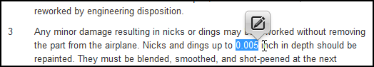
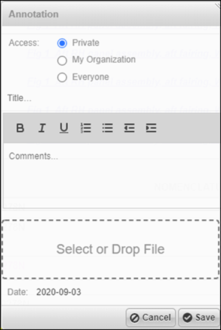
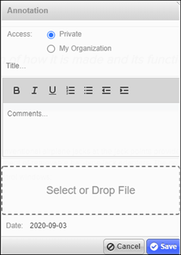
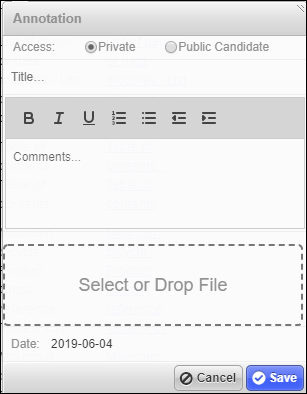

To create annotations for text and/or graphics (SVG, GIF, and PNG), do these
steps:
Note: If there is a Caution or Warning for the document you want to create
an annotation, you must first acknowledge the security instructions. After you
check the Acknowledge security instruction checkbox, the
annotation icon is enabled, allowing you to create
an annotation for the document.
-
To create an annotation for text, do these substeps:
-
In the Content section, highlight the text you
want to annotate.

- Click the annotation icon .
-
In the Content section, highlight the text you
want to annotate.
-
To create an annotation for a graphic, do these sub steps:
- Open the graphic that you want to create an annotation on.
-
Click the
 button in the
Graphic toolbar.
The cursor changes to a shape.
button in the
Graphic toolbar.
The cursor changes to a shape. - Draw a square where you want to place your annotation.
- The annotation pop-up dialog that appears is identical for both text and graphic.
-
If you have permission to create, modify, and delete public annotations, this
annotation pop-up dialog appears:

Access if the content belongs to your organization

Access if the content does not belong to your organization
-
Not applicable for Pinpoint Standalone Light. If
you are viewing a publication of your organization, select one of these
ACCESS radio buttons:
- If you want the annotation to only be visible to you, select the Private radio button.
- If you want the annotation to only be visible to your organization, select the My Organization radio button.
- If you want the annotation to be visible to all organizations, select the Everyone radio button.
-
Not applicable for Pinpoint Standalone Light. If
you are viewing a publication of another organization, select one of these
ACCESS radio buttons:
- If you want the annotation to only be visible to you, select the Private radio button.
- If you want the annotation to only be visible to your organization, select the My Organization radio button.
-
If you do not have permission to create, modify, and delete public annotations,
this annotation pop-up dialog appears:

Note: You can move the annotation pop-up dialog by clicking the annotation header and dragging the dialog to another location. -
Choose whether the annotation is private or public.
Note: Public annotations are under privilege control. In order to create, modify and delete public annotations you will need Write and Delete permission for the Can create, modify or delete public Annotations in Access Control. Users who do not have Write permission can create a "Public Candidate" annotation. This annotation must be approved by a user with Write permission before it can be made public.
-
Type a title and the comments you want to make.
Note: The Date field shows the current date and cannot be edited.
-
From the format toolbar, select a format style to apply to the comments:
- Bold
- Italics
- Underline
- Ordered List
- Unordered List
- Right Indent
- Left Indent
Note: Any formatting options that you apply to annotations are visible when you edit or view an annotation and when you create a feedback document. -
Optional: In the Select or Drop File field, add an
attachment to the annotation using either of these methods:
- Drag the file from your computer’s file system and drop it in the Select or Drop File field.
- Click in the field to open the file browser, locate, and insert the file.
Here are some examples of supported formats:- .bmp
- .gif
- .jpg
- .jpeg
- .mp4
- .png
Note: To remove an attachment, click the Remove Attachment icon next to the name of the attachment.Any attachments in browser-supported formats display inline in the annotation. Attachments in formats that are not supported have the file name.Note: For IE 11 only: Attachments with a file size greater than 5mb seem to be slower in attachment previews. -
Click the Save button.
In the Content pane the annotated text will appear with yellow highlight, while in the Graphic pane you will see the annotation as a red square. When moving the mouse over the annotation it will pop up in a dialog. You will also see it if you click inside the gray "View Annotations" box.